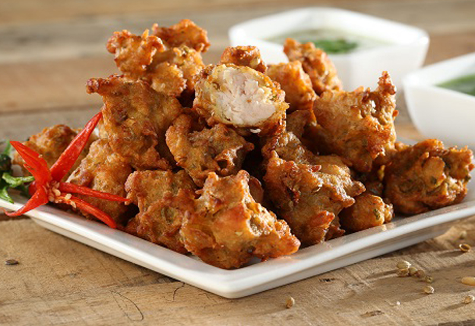
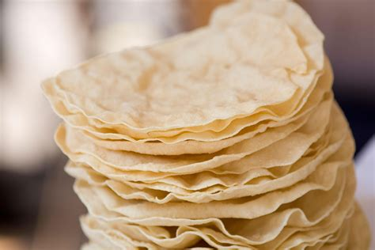
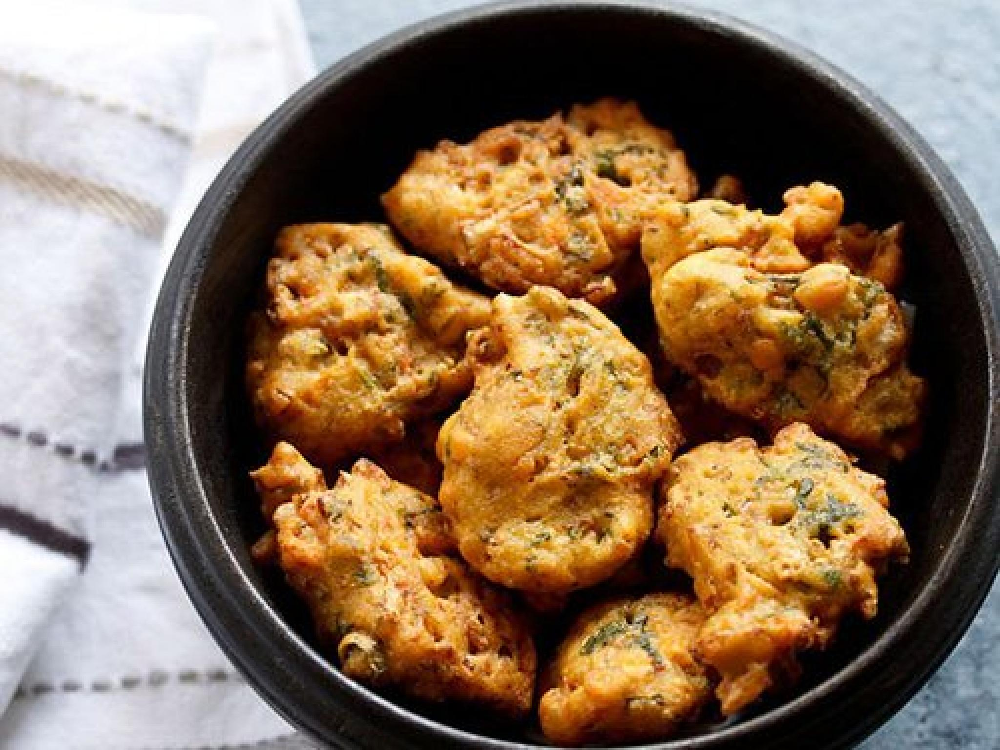

poori
Poori is a deep fried Indian bread that is served hot, usually as a breakfast dish or as a side dish to accompany a main course. It is made with a simple dough of flour and water and is usually stuffed with potatoes or other vegetables. Poori can also be served with a variety of accompaniments, such as pickles, chutneys, and yogurt.

samosa
Samosas are a popular savory snack all around the world. Originating in the Indian subcontinent, they consist of a filling of spiced potatoes, onions, peas, and sometimes even ground beef, chicken, or lamb, all wrapped in a crisp, flaky pastry. This tasty treat has become immensely popular in India, Pakistan, and other parts of South Asia, and is also popular in other parts of the world such as East Africa, the Middle East, and Southeast Asia.

panipuri
Panipuri is a popular street snack in India, made of a deep-fried, hollow pastry shell stuffed with a mixture of flavoured water, tamarind chutney, chili, chaat masala, potato, onion and chickpeas. It is one of the most popular snacks in India and has become a staple at chaat stalls and food vendors all over the country. Panipuri is a crunchy and juicy treat that is sure to tantalize your taste buds.
Chicken pakora is one of the most popular Indian snacks. It is a deep-fried snack made of boneless chicken, coated in a spicy batter of gram flour, spices, and herbs. It is typically served as an appetizer or side dish and can be enjoyed with chutney or ketchup. The dish is an especially popular street food in India and is enjoyed by people of all ages.
chicken pakora
poppadoms
Poppadoms are a popular accompaniment to Indian meals and are often served as an appetiser. They are thin, crisp discs made from a paste of seasoned lentils, flour, oil and water. The paste is flattened and dried to create a wafer-like texture, which is then deep-fried in oil to give it a crunchy texture. Poppadoms are usually served with chutney and other dips, such as mango and mint chutney.
vegetable pakora
Vegetable pakora is a delicious and flavorful snack that is perfect for parties or a snack on the go. It is a popular dish in India and is made with a variety of vegetables, such as potatoes, onions, eggplant, and cauliflower, which are coated in a spicy chickpea flour batter and deep-fried. The result is a crunchy and tasty snack that is sure to satisfy even the pickiest eaters.